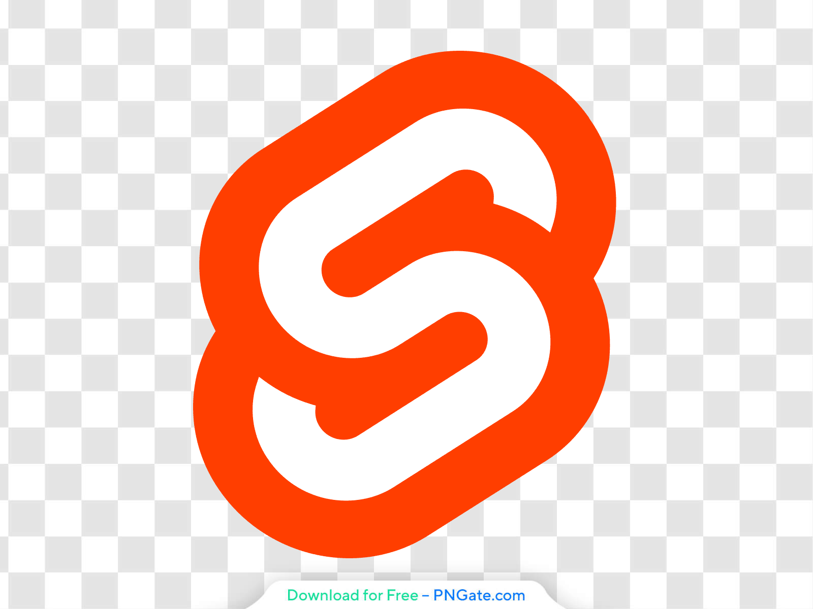

Marketing website done with Astro
Astroship is a starter template for startups, marketing websites & landing pages. Built with Astro.build and TailwindCSS. You can quickly create any website with this starter.

Everything you need to start a website
Astro comes batteries included. It takes the best parts of state-of-the-art tools and adds its own innovations.
Bring Your Own Framework
Build your site using React, Svelte, Vue, Preact, web components, or just plain ol' HTML + JavaScript.
100% Static HTML, No JS
Astro renders your entire page to static HTML, removing all JavaScript from your final build by default.
On-Demand Components
Need some JS? Astro can automatically hydrate interactive components when they become visible on the page.
Broad Integration
Astro supports TypeScript, Scoped CSS, CSS Modules, Sass, Tailwind, Markdown, MDX, and any other npm packages.
SEO Enabled
Automatic sitemaps, RSS feeds, pagination and collections take the pain out of SEO and syndication, it just works!
Community
Astro is an open source project powered by hundreds of contributors making thousands of individual contributions.
Works with your technologies


Build faster websites.
Pull content from anywhere and serve it fast with Astro's next-gen island architecture.